BLACK
TEMPLE
¡Control your adventures, manage your heroes!
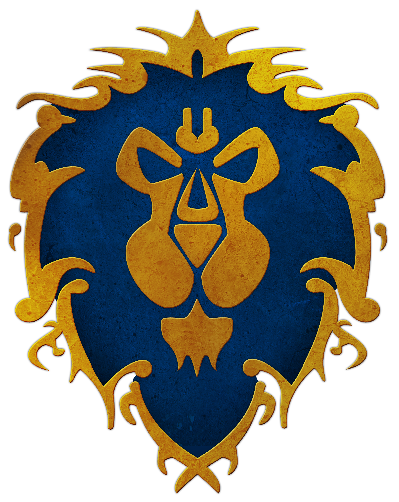
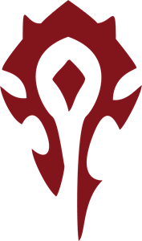
¡Immerse yourself in the world of Azeroth and live your own story! Create and modify characters, design your own dungeons, and forge epic stories in the land of World of Warcraft with our comprehensive role-playing game management tool..
¡Become a hero of the Alliance!
The alliance is one of the two major factions in World of Warcraft. She is known for her strong sense of justice and honor. It is often associated with
defense of light and civilization.
Among the races that make up the alliance are humans, gnomes, night elves, draenei, and more recently the worgen, pandaren, and
the dractyr.
Each race has its own background and reasons for joining the Alliance.
The Alliance usually seeks order, cooperation and justice. She is motivated by the protection of her people and confronting common threats such as the Plague.
and the Burning Legion.
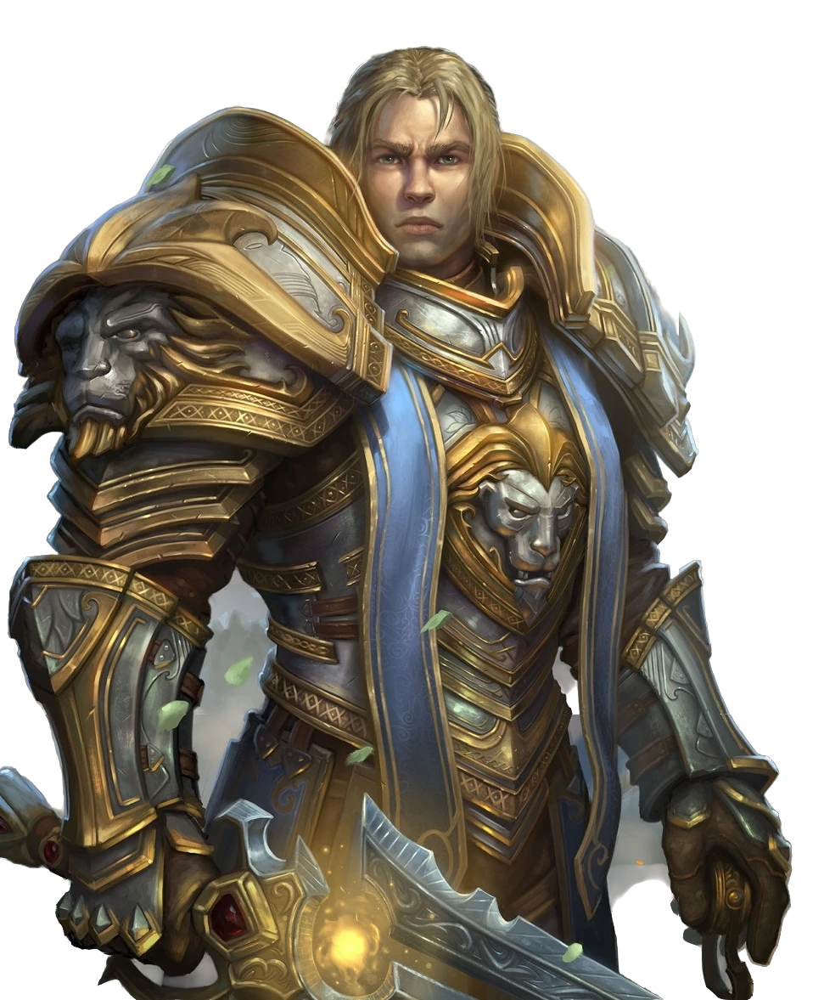
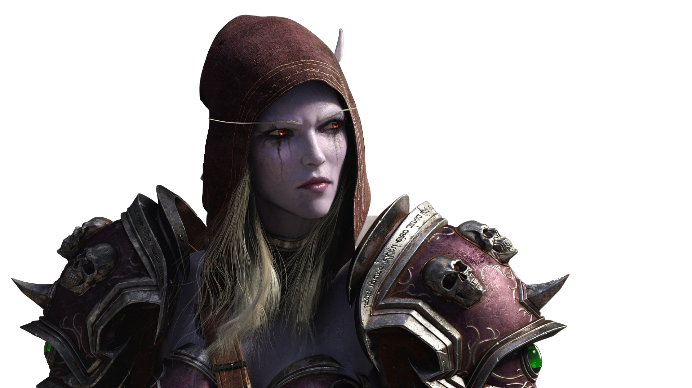
Defend Hord's liberty!
The Hord the other great faction in the game, with a bigger diversity in terms of races and cultures. It also has an honor and survival background. Usually it is paired up with pragmatism and figth for liberty. The Hord is formed by Orcs, Trolls, Undeads, Tauren, Blood Elves, Goblins, Pandaren and Dracthyr. Each race has unique story and reasons to join The Hord.
The Hord has to focus on survival, honor, and oppression rejection. Although sometimes it's perceived as aggresive, it also hasa sense of honor and a big desire of protecting its members and claim its place in the world.

NEWS
THIS WEEK AT WOW: MAY 6
The Cataclysm pre-patch is now available, with the implementation of the new playable races: goblins and worgens and a new profession, archaeology.
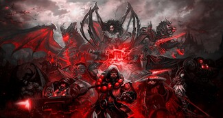
THE RELEASE OF A NEW KING
¡The Worgen Reveal a New Leader! The mythical PerroSanchez Promises to Unify the Lupercine Tribes in Azeroth
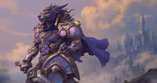
THE BLACK FLIGHT RETURNS
Led by their leader, Gravesen, the dragons of the Black dragonflight have returned to Namek.
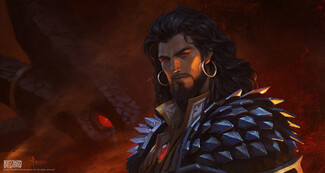
THE ORCS FORGE A NEW ALLIANCE
The Twilight Butchers, led by Joselito of the Sausages, have arrived in Orgrimmar to forge their alliance with the leaders of the Horde.
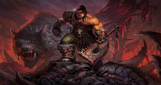
THE FIRE IN TELDRASSIL REVEALS EVIDENCE OF PICCOLO'S BETRAYAL
Apparently, it was this treacherous Namekian who set the silver grove on fire.
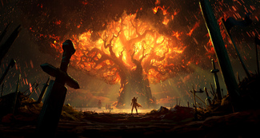
THE RETURN OF ILLIDAN TEMPESTIRA
Illidan announces a new path: the demon hunter rejects chaos and seeks redemption in the Shadowlands.
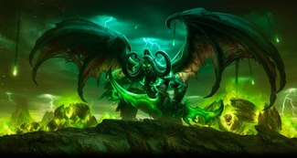
PANDARIA OPENS ITS DOORS TO THE WORLD
The pandaren begin a cultural exchange program to Promote Peace in Azeroth. Waiting for Pedro Sanchez to approve the measures and not agree again with Morocco.
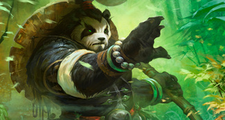
IT TURNS OUT MALYGOS WAS BAD AND NO ONE KNEW IT
After his breakup with Georgina following his infidelity with DoñaRumba, he decided to annihilate all life in Azeroth.
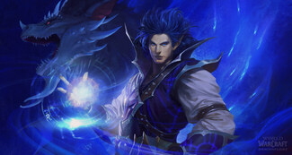
GARROSH HELLSCREAM: HERO OR VILLAIN?
The leader of Orgrimmar attempted to annihilate the part of the Horde that did not support him.
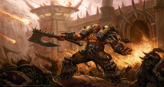
THE DRACTHYR FORGE ALLIANCES WITH THE HORDE AND THE ALLIANCE
The dragons, who have been asleep for centuries, have woken up from their nap and want to join the party
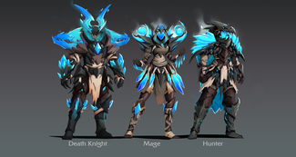
THE FALL OF TEGUCIGUALPA
After the siege by the Furros, the city fell and is being rebuilt from scratch. All the families are crying
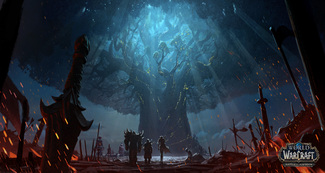
FISHING CONTEST IN GUAYAKIL
Join fishermen from around the world who gather outside Culombia for the famous fishing contest
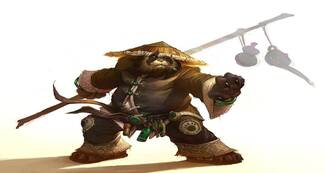